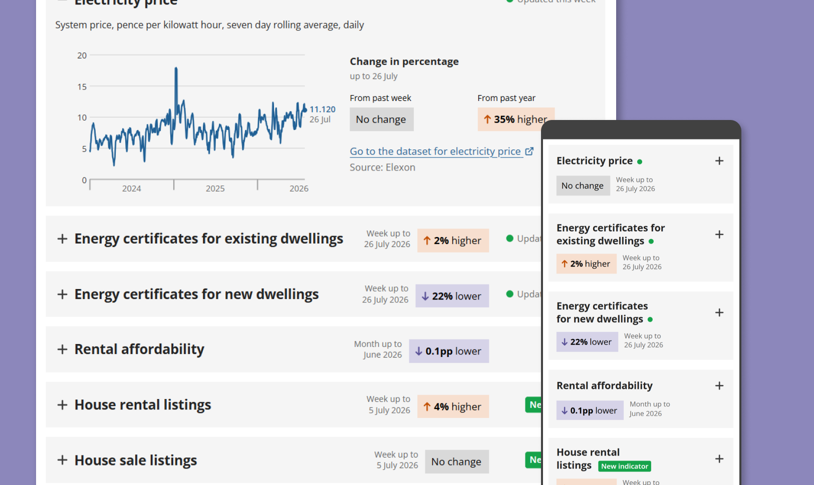
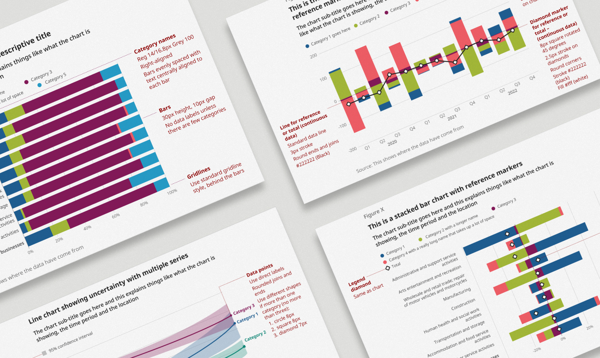
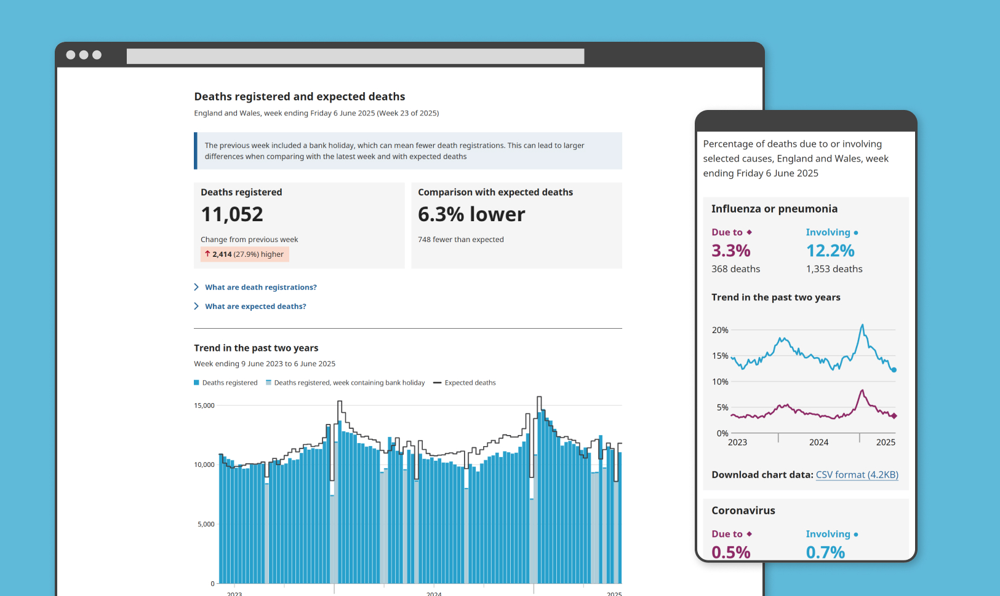
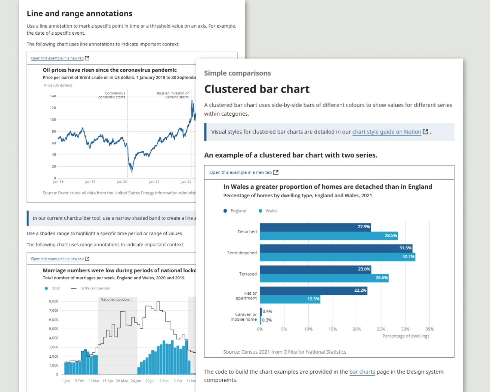
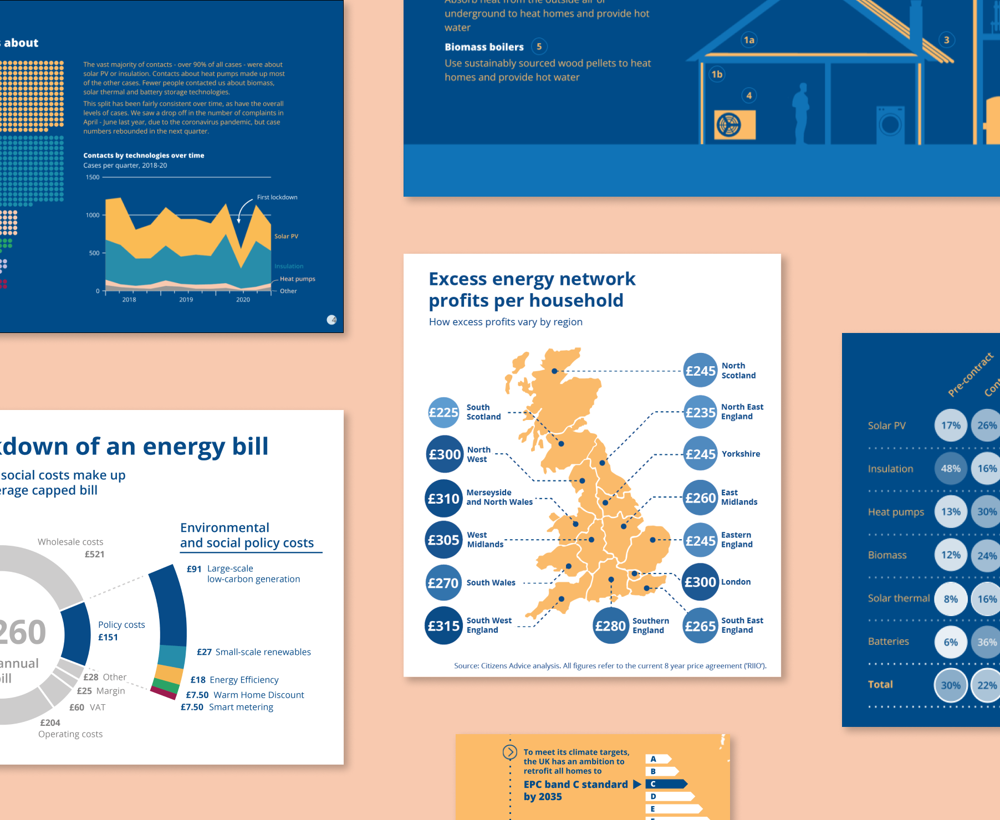

Peter Broad
Creating charts, dashboards and visual systems that help people understand complex information
With a background in policy research, I’m interested in designing and building data graphics that are clear, engaging and true to the subject they represent.
I like to build visual systems that help teams communicate consistently across products, and pay attention to the details that make information easier to understand and use.
Work





Thoughts
Data visualisation's digital production problem
Make charts analogue again? Why we struggle to match pre-digital data design, and why AI may help
Read on SubstackBlog heading 2
Blog description 2
Blog heading 3
Blog description 3